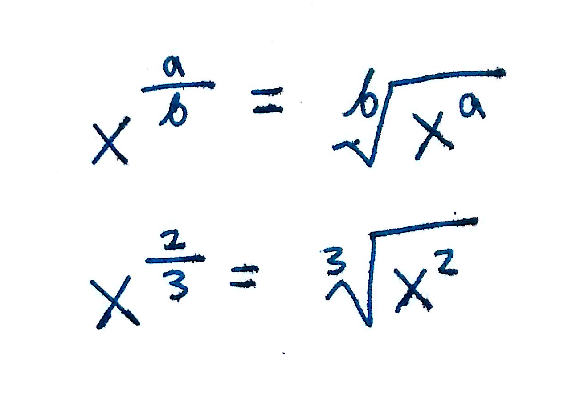

In case you wanted a brief review of some mathematical concepts commonly used in chemistry:
Topics covered in this post:
Exponents
Logarithms (log and ln)
Fractions
Dimensional analysis and unit conversions are deserving of their own post, which can be found here:
An exponent is a mathematical operation that looks something like this:
`x^4= x*x*x*x`
In other words, an exponent above a number of expression means that that expression is being multiplied by itself that many times. For example, in the expression `x^4`, x is the expression that is multiplied by itself 4 times. The expression is called the base and the exponent is just called the power. A couple examples are provided below:
`3^7 = 3*3*3*3*3*3*3`= 2187
`(x-1)^4= (x-1)(x-1)(x-1)(x-1)`
To calculate the exponent by hand, simply expand the expression. For more complex exponents such as `46^4`, you can use a calculator. In the calculator, the ^ symbol denotes raising to an exponent. In your calculator,
46^4 = `46^4`
This allows you to calculate exponents quickly.
Additionally, there are a couple rules for evaluating expressions containing exponents:
When multiplying expressions with the same base, add the exponents together.
`(x^a)(x^b)=x^(a+b)`
`(x^2)(x^5)=x^(2+5)=x^7`
When an exponent already has an exponent and is being raised again, multiply the two exponents
`(x^a)^b=x^(ab)`
`(x^3)^5=x^(15)`
When raising an expression containing a fraction, raise both the numerator and denominator by the exponent.
`(x/y)^a=x^a/y^a`
`(x/y)^2=x^2/y^2`
`(3/4)^3=3^3/4^3`
When both the numerator and denominator have the same base but different exponents, subtract the bottom exponent from the top.
`x^a/x^b=x^(a-b)`
`2^5/2^2=2^(5-2)`
When raising an expression by a negative power, take the reciprocal of the expression and flip the sign of the exponent.
`x^-a=1/x^a`
`x^-1=1/x^1`
`(xy)^-2=1/((xy)^2)=1/(x^2y^2)`
Any base raised by 0 is equal to 1.
`x^0=1`
`(xy)^0=1`
`4^0=1`
This is the most complicated of the operations. Any base being raised by a fraction can be expressed as the following:
Excuse the weird looking image. I am bad at programming and do not know how to express the weird root in code.
The answers to these problems at located on the bottom of this page.
A logarithm is simply the inverse of exponentiation. The little subscript is called the base. Whatever's in the parenthesis is called the argument i.e for `log_3(7)`, 3 is the base and 7 is the argument. There exist two common logs:
`log`. This is a shorthand way of saying `log_(10),` or "log base 10"
`ln`. This is a shorthand way of saying natural log, or `log_e` (log base `e`)
Note that `ln` is just another way of writing `log_e`. Both mean the same thing.
All logs, including ln, have this following property: when raised to its base, the log and base cancel each other out. For example:
`10^(log(xy))=xy`
`e^ln(xy)=xy`
There are several other properties of logs that are worth mentioning. Since ln shows up more frequently in science than log does, the rest of the post will use ln for familiarity purposes. Both log and ln have the same properties. The only thing that differs is the base.
When adding logs of the same base, simply multiply the arguments together.
`ln(a)+ln(b)=ln(ab)`
`ln(3)+ln(5)=ln(3*5)=ln15`
This applies to the reverse as well:
`ln(20)=ln4+ln5=ln10+ln2`
Try it on your calculator to confirm that those are indeed equal!
When subtracting logs of the same base, divide the logs.
`ln(a)-ln(b)=ln(a/b)`
`ln(30)-ln(2)=ln(30/2)=ln15`
When raising the argument of a log to a power, you can simply remove the power and multiply the entire log by the exponent.
`ln(a^y)=y*ln(a)`
`ln(3^2)=2*ln(3)`
`-4*ln(5)=ln(5^(-4))=ln(1/5^4)`
If you ever find yourself needing to cancel out a logarithm, simply raise it to its base.
`ln(a)=ln6`
`e^(ln(a))=e^(ln6)`
`a=6`
Any logarithm with the argument=1, regardless of base, will be 0.
`ln(1)=0`
`log(1)=0`
That's pretty much it for logarithms! Here are a couple practice problems.
This part of the post will be focused on simplifying complex fractions such as the following
`x^2/(x/y)`
The easiest way I've found to do this is to convert the fractions into exponents. Remember from the exponents section that:
`1/x=x^-1`
By using this rule of exponents, we can simplify the previous complex fraction into
`x^2(x/y)^-1`
Using properties of exponents, we can further reduce the fraction.
`x^2/1(x/y)^-1`
`=x^2/1(x^-1/y^-1)`
`=x^(2-1)/y^-1`
`=x^1/y^-1`
`=xy`
By converting the complicated parts of a fraction to exponents, you can simply use the rules of exponents to simplify complex fractions! Let's do some practice problems.
Reduce all of the following complex fractions
`log(x)=log(3)-log(2)`
`log(x)=log(3/2)`
`10^(log(x))=10^(log(3/2))`
`x=3/2`